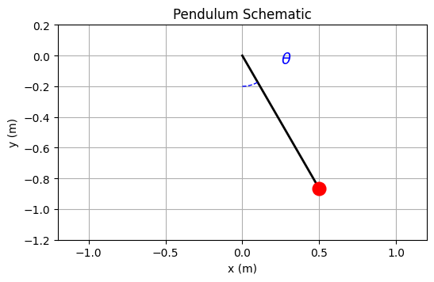
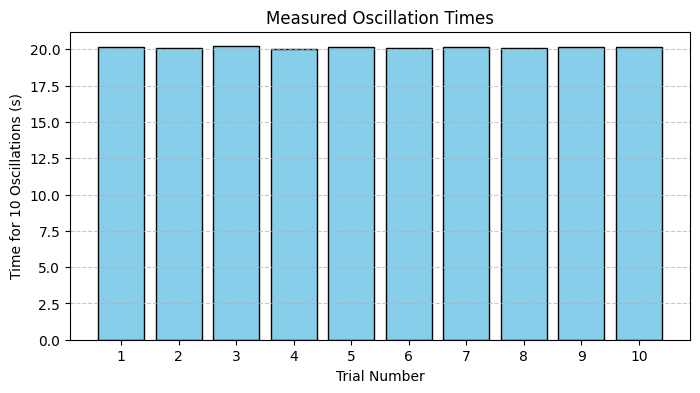

Below is an integrated Markdown document that includes both the explanation, calculations, and the Python code blocks for generating the schematic of a pendulum and a bar chart of the measured oscillation times.
Measuring Earth's Gravitational Acceleration with a Pendulum
The acceleration due to gravity, \(g\), is a fundamental constant influencing many physical phenomena. One classic method to determine \(g\) is by measuring the period of a simple pendulum. This experiment illustrates not only the method of measurement but also emphasizes rigorous uncertainty analysis.
1. Materials and Setup
Materials:
- A string (e.g., 1 or 1.5 meters long)
- A small weight (e.g., a bag of coins, a key chain)
- Stopwatch (or smartphone timer)
- Ruler or measuring tape
Setup:
- Pendulum Construction:
- Attach the weight to the string.
- Fix the other end of the string to a sturdy support.
- Length Measurement:
- Measure the length \(L\) of the pendulum from the suspension point to the center of mass of the weight.
-
Record the resolution of your measuring tool. For example, if the ruler has a resolution of 1 mm, the uncertainty in \(L\) is estimated as:
$$ \Delta L = \frac{1 \text{ mm}}{2} = 0.5 \text{ mm} $$
2. Data Collection
- Oscillation Measurement:
- Displace the pendulum by less than \(15^\circ\) and release it.
- Measure the time for 10 complete oscillations (\(T_{10}\)). Repeat this process 10 times.
-
Record all 10 measurements.
-
Calculating the Mean and Uncertainty:
- Let the 10 measurements for 10 oscillations be:
$$ T_{10,1}, T_{10,2}, \dots, T_{10,10} $$ -
The mean time for 10 oscillations is:
$$ \bar{T}{10} = \frac{1}{10} \sum{i=1}^{10} T_{10,i} $$
-
Compute the standard deviation \(\sigma_{T_{10}}\) of these measurements.
-
The uncertainty in the mean time is:
$$ \Delta \bar{T}{10} = \frac{\sigma{T_{10}}}{\sqrt{10}} $$
-
Determine the Period \(T\) of One Oscillation:
$$ T = \frac{\bar{T}{10}}{10} \quad \text{with uncertainty} \quad \Delta T = \frac{\Delta \bar{T}{10}}{10} $$
3. Calculations
3.1 Estimating \(g\)
The period of a simple pendulum (for small oscillations) is given by:
Solving for \(g\):
3.2 Uncertainty Propagation
If \(g\) is calculated using \(L\) and \(T\) with uncertainties \(\Delta L\) and \(\Delta T\), respectively, then the relative uncertainty in \(g\) is given by:
Thus, the absolute uncertainty in \(g\) is:
3.3 Example Data
Suppose you recorded the following times for 10 oscillations:
| Trial | \(T_{10}\) (s) |
|---|---|
| 1 | 20.15 |
| 2 | 20.10 |
| 3 | 20.20 |
| 4 | 20.05 |
| 5 | 20.18 |
| 6 | 20.12 |
| 7 | 20.16 |
| 8 | 20.11 |
| 9 | 20.14 |
| 10 | 20.17 |
Assume:
- \(L = 1.000 \, \text{m}\) with \(\Delta L = 0.0005 \, \text{m}\).
- Mean time for 10 oscillations: \(\bar{T}_{10} \approx 20.14 \, \text{s}\)
\(\Rightarrow\) Period for one oscillation: \(T \approx 2.014 \, \text{s}\)
- Suppose \(\sigma_{T_{10}} \approx 0.05 \, \text{s}\) so that:
$ \Delta \bar{T}_{10} \approx \frac{0.05}{\sqrt{10}} \approx 0.0158 \, \text{s} \quad \text{and} \quad \Delta T \approx \frac{0.0158}{10} = 0.00158 \, \text{s} $
Then:
$ g \approx \frac{4\pi^2 \times 1.000}{(2.014)^2} \approx \frac{39.478}{4.056} \approx 9.74 \, \text{m/s}^2 $
And the relative uncertainties:
$ \frac{\Delta L}{L} \approx 0.0005, \quad \frac{\Delta T}{T} \approx \frac{0.00158}{2.014} \approx 0.000785 $
$ \frac{\Delta g}{g} = \sqrt{(0.0005)^2 + \left(2 \times 0.000785\right)^2} \approx 0.00149 $
$ \Delta g \approx 9.74 \times 0.00149 \approx 0.0145 \, \text{m/s}^2 $
Thus, the measured value of \(g\) is:
$ g = 9.74 \pm 0.015 \, \text{m/s}^2 $
4. Visuals
4.1 Pendulum Schematic
The following code produces a schematic diagram of a pendulum:
import matplotlib.pyplot as plt
import numpy as np
# Pendulum parameters
L = 1.0 # pendulum length in meters
theta = np.pi/6 # 30 degrees angle
# Calculate pendulum bob position (x, y)
x = L * np.sin(theta)
y = -L * np.cos(theta)
# Create the schematic plot
plt.figure(figsize=(6,6))
plt.plot([0, x], [0, y], 'k-', lw=2) # pendulum string
plt.plot(x, y, 'ro', markersize=12) # pendulum bob
# Draw an arc to represent the angle theta
arc_theta = np.linspace(0, theta, 100)
arc_x = 0.2 * np.sin(arc_theta)
arc_y = -0.2 * np.cos(arc_theta)
plt.plot(arc_x, arc_y, 'b--', lw=1)
plt.text(0.25, -0.05, r'$\theta$', color='blue', fontsize=14)
plt.title("Pendulum Schematic")
plt.xlabel("x (m)")
plt.ylabel("y (m)")
plt.xlim(-1.2*L, 1.2*L)
plt.ylim(-1.2*L, 0.2*L)
plt.gca().set_aspect('equal', adjustable='box')
plt.grid(True)
plt.show()

4.2 Visualizing Measured Oscillation Times
This code generates a bar chart to visualize the recorded times for 10 oscillations across 10 trials:
import matplotlib.pyplot as plt
import numpy as np
# Example data for 10 measurements (time for 10 oscillations in seconds)
trials = np.arange(1, 11)
T10_measurements = [20.15, 20.10, 20.20, 20.05, 20.18, 20.12, 20.16, 20.11, 20.14, 20.17]
plt.figure(figsize=(8, 4))
plt.bar(trials, T10_measurements, color='skyblue', edgecolor='black')
plt.xlabel("Trial Number")
plt.ylabel("Time for 10 Oscillations (s)")
plt.title("Measured Oscillation Times")
plt.xticks(trials)
plt.grid(axis='y', linestyle='--', alpha=0.7)
plt.show()

5. Analysis and Discussion
Comparison to the Standard Value
- Standard Value: \(g \approx 9.81 \, \text{m/s}^2\)
- Measured Value: \(g \approx 9.74 \, \text{m/s}^2\) (from our example data)
- The slight discrepancy can be attributed to measurement uncertainties or local variations in \(g\).
Sources of Uncertainty and Their Impact
- Measurement Resolution:
- The uncertainty in \(L\) (half the smallest division of the ruler) contributes to the overall uncertainty.
- Timing Variability:
- Human reaction time and potential stopwatch errors introduce variability in \(T_{10}\). Repeated measurements and calculating the standard deviation help quantify this uncertainty.
- Assumptions:
- The pendulum period formula \(T = 2\pi\sqrt{L/g}\) assumes small oscillation angles (typically \(<15^\circ\)). Deviations from this condition introduce systematic errors.
- Experimental Limitations:
- Air resistance, friction at the pivot, and alignment errors may also affect the measurements.
Deliverables
- Tabulated Data:
- A table of 10 measurements for the time of 10 oscillations.
- Calculated values for the mean time \(\bar{T}_{10}\), period \(T\), and their uncertainties.
- Calculated \(g\) and Its Uncertainty:
- The value of \(g\) along with the uncertainty propagated from the measurements.
- Visualizations:
- A schematic diagram of the pendulum.
- A bar chart of the measured oscillation times.
- Discussion:
- A detailed discussion on the sources of uncertainty and their impact on the final measurement of \(g\).
This integrated document combines theoretical background, experimental data, uncertainty analysis, and visualizations, providing a complete report on measuring Earth's gravitational acceleration with a pendulum.